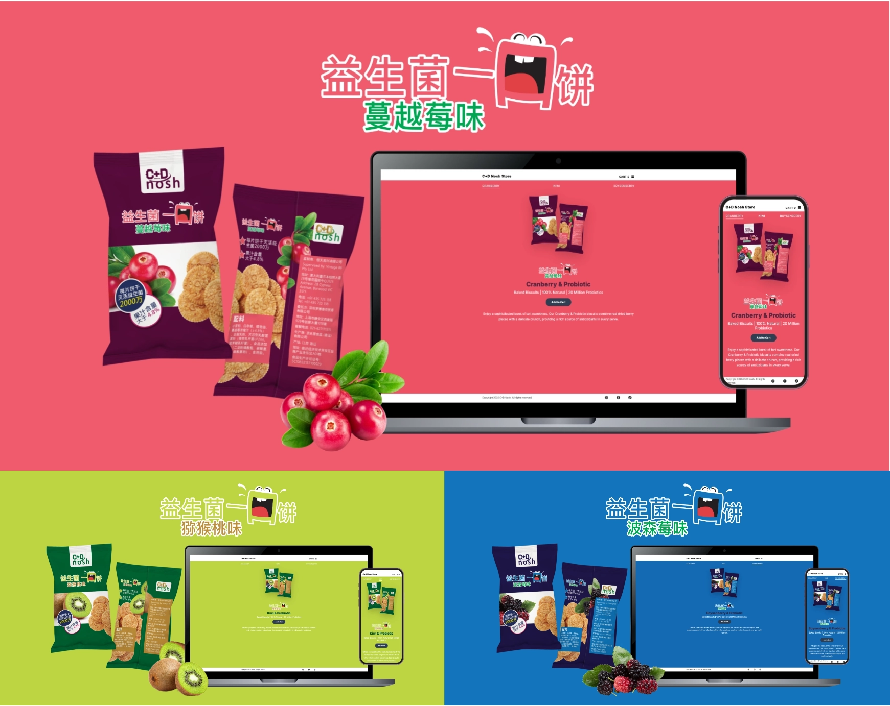
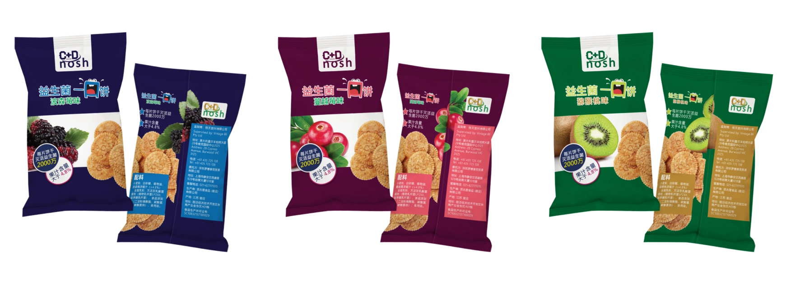
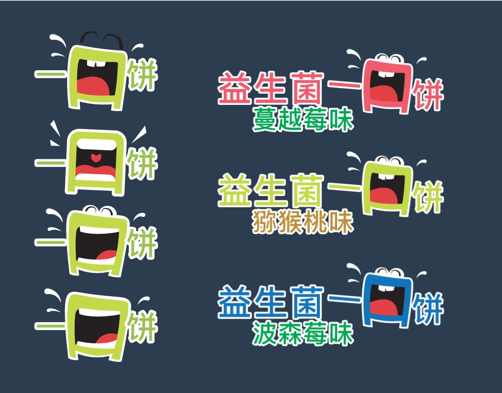
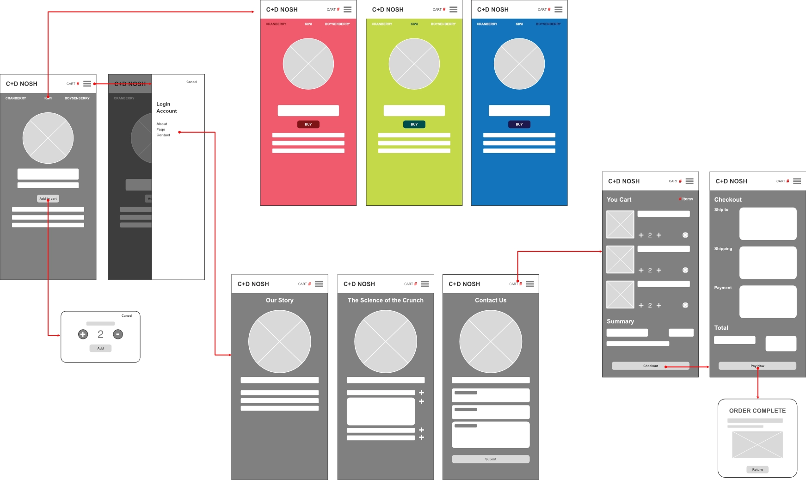

C+D Nosh Biscuits
Lead Brand Designer & Front-End Developer
Translating a physical print production job into an eCommerce experience. This project demonstrates the execution of a wellness brand with complex multilingual typography and its evolution into an interactive digital storefront. Powered by a modular theme engine, the interface dynamically swaps color mapping, typography themes, and packaged asset links in real time based on user interaction. Proving how programmatic logic can elevate product storytelling.

The Brief & Production Constraints
Most probiotic supplements look clinical, cold, and medicinal. The goal for C+D Nosh was to break through with a brand character that is energetic, edible, and high end. The physical challenge required designing multi-layered packaging variants in Chinese. This meant working precisely within tight manufacturing restrictions, text-legibility rules for character blocks, and color accuracy across three distinct flavor profiles: Kiwi, Cranberry, and Boysenberry.


Flavor Identity & Color Mapping
I engineered a scalable design system anchored by an unique mascot "mouth" character. Creating distinct visual sub-identities for each product variant. To establish instant flavor recognition, I mapped a deliberate color system across the line: vibrant crimson for Cranberry, lime green for Kiwi, and deep cobalt for Boysenberry.
Typography scale, character stroke weights, and background values were meticulously selected to preserve the playful energy of the brand. This structural balance ensures the mascot retains a high contrast presence even when nested directly beside dense multi-lingual manufacturing layouts and Chinese typography blocks.
Mapping the Interactive Micro-Steps
Before moving from the physical shelf into digital space, I mapped out the interaction blueprint to ensure a frictionless user journey. The core UX challenge was avoiding standard flavor selection.
Instead, I designed a flat, horizontal tap system. By studying how users instinctively navigate card based mobile patterns, I aligned the flavor buttons to act as interaction triggers. This layout primes the userfor a fully immersive, screen wide responsive feedback system the exact millisecond a button is pressed.

From Physical Shelf to Digital Architecture
To bring the brand to life online, I transitioned the physical product guidelines into an interactive eCommerce cosystem. Rather than designing a static store page, I developed an immersive experience where the entire UI dynamically pivots its color theme and visual layout matching the user's active selection.
By treating the browser window like a responsive structural grid, the desktop and mobile screen space shifts fluidly between product imagery, storytelling narratives and call to action buttons. The interface is designed to feel like a tangible product experience, where the user can explore and interact with each flavor variant in a visually engaging way.

Asset Engineering & Web Performance
Premium branding often fails online due to heavy file sizes that compromise web performance. Leveraging my print production background, I engineered a strict export pipeline to optimize delivery. Complex multi layered vector designs were deployed as lightweight SVGs.
Simultaneously, high fidelity packaging renders were converted into next gen `.webp` formats utilizing aggressive compression ratios. This meticulous asset management guarantees that despite the immersive visual transitions, the entire interface remains incredibly performant and aligned with modern SEO metrics.
Interactive Theme-Switching Logic
As a developer, I focused on high performance repeatable logic, and scalable code architecture. The theme switching engine streamlines asset delivery by decoupling text into a centralized dictionary data model. This data system leverages modern JavaScript template literals to dynamically inject variable hooks into asset paths, mutating background hex codes, typography colors, and package vector paths simultaneously on user interaction.
By binding user click triggers directly to global data arrays and class modifiers, the script handles dynamic DOM style adjustments flawlessly while maintaining active navigation states. This programmatic approach directly mirrors the efficiency of variable driven print template links, ensuring the front end codebase remains fully modular for rapid future product line expansions.
// 1. Data System: Centralized copy assets per flavor variant
const flavorStories = {
cranberry: "Enjoy a sophisticated burst of tart sweetness...",
kiwi: "Refresh your palate with a zesty, tropical crunch...",
boysenberry: "Indulge in the deep, jammy notes of premium Boysenberries..."
};
// 2. Theme Engine: Mutating global DOM class states instead of injecting inline hex strings
function changeFlavor(flavorName, event) {
const body = document.body;
const title = document.getElementById('flavour-title');
const productImg = document.getElementById('biscuit-pack');
const heroLogo = document.querySelector(const detailText = document.getElementById('detail-text');
// Dissolving previous active themes to apply new CSS design tokens
body.classList.remove('theme-kiwi', 'theme-cranberry', 'theme-boysenberry');
body.classList.add(`theme-${flavorName}`);
// 3. Asset Pipeline: Dynamically mapping optimized webp and inline svg formats
productImg.src = `assets/pack-${flavorName}.webp`;
heroLogo.src = `assets/logo-${flavorName}.svg`;
title.innerText = flavorName.charAt(0).toUpperCase() + flavorName.slice(1) + " & Probiotic";
detailText.innerText = flavorStories[flavorName];
// 4. State Management: Toggling active navigation classes
document.querySelectorAll('.flavor-btn').forEach(btn => btn.classList.remove('active'));
if (event) event.currentTarget.classList.add('active');
}
Orchestrated Page Transitions
Visual continuity during navigation is vital for maintaining brand immersion across page loads. To eliminate harsh browser jumps, I engineered a custom asynchronous transition manager utilizing JavaScript to control the routing lifecycle.
By intercepting the default browser routing mechanism (`e.preventDefault()`), the script executes a synchronized sequence: it collapses the mobile navigation menu, injects a hardware-accelerated CSS fade animation (`page-fade-out`) across the DOM body, and triggers a 400ms delay timer. This strategic pause gives the canvas room to complete its exit transition before passing the destination URL directly to the browser routing engine.
// 1. Intercept Routing: Hijacking standard anchor link clicks
document.querySelectorAll('.transition-link').forEach(link => {
link.addEventListener('click', function(e) {
e.preventDefault();
const destination = this.href;
// 2. Reset UI States: Collapse active navigation menus gracefully
toggleMenu();
// 3. Visual Sequence: Triggering smooth out-bound CSS fade state
document.body.classList.add('page-fade-out');
// 4. Timed Redirection: Delay routing until animation completes
setTimeout(() => {
window.location.href = destination;
}, 400);
});
});